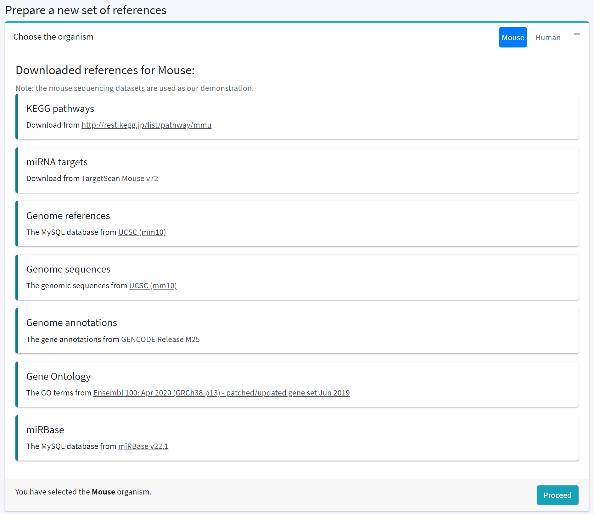
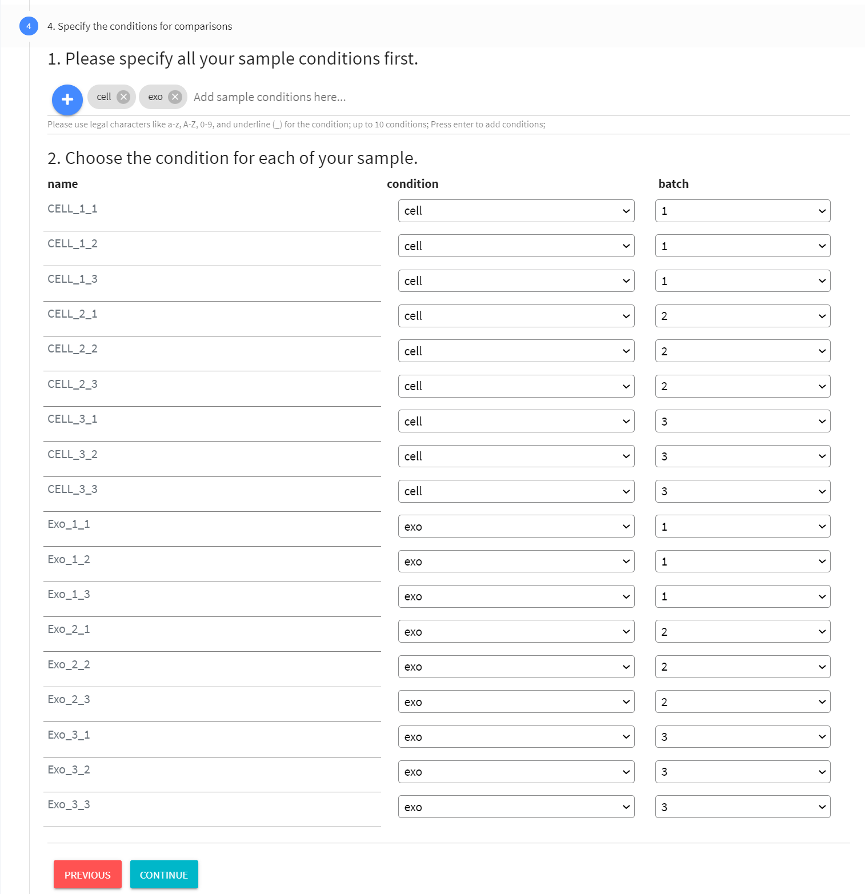
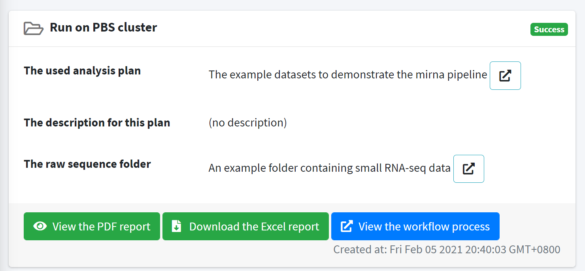
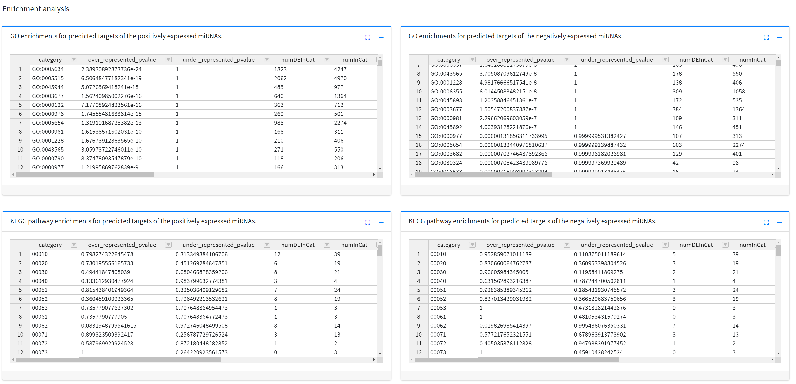

The workflow for the miRNA sequence data analysis
This miRNA analysis workflow consists of 15 steps (see the figure below) containing six major parts: 1) adapter sequence trimming, 2) genome mapping, 3) sequence quality control, 4) annotation, 5) expression summarizing, 6) final report generating. This 15-step workflow was made reproducible and can be executed via web pages. The two inputs to run this workflow are a folder containing raw sequence fastq.gz files and an Excel file describes the miRNA analysis plan. This analysis plan has its specific format and contains the metadata for each of the input sequence files, the sample conditions, and the comparison contrasts among the sample conditions. We provided a web page (click to view) to guide users to prepare this plan. Then, this plan can be selected to run the analysis workflow and our BDP workbench takes care of the details to run and monitor tasks in each workflow step.
{kind=link}
This application is also used to demonstrate that BDP package developers can design graphical web interfaces, such as this web page you are currently viewing, in their package, so that users can have friendly interfaces to execute pipelines and visualize results interactively. Here, we would like to demonstrate that BDP can assist developers to build user-friendly apps which are in the form of the BDP package. This miRNA analysis workflow contains the BCGSC miRNA profiling pipeline which requires users to prepare the reference database with MySQL. For downstream analyses, additional reference files are also needed. There prerequistes can be prepared automatically by several mouse clicks in our customized web pages of this package. Users can also prepare the required analysis plan, run the analysis both, and view results interactively all via web pages. The user experience can be very friendly just like using a web service application.
Step 0. One-time preparations before running the workflow
There are two prerequistes that are needed for this workflow and preparing these two prerequistes is an one-time effort. The first thing is to download reference files of seven types containing the genome sequence, genome annoations, KEGG pathway annotations, Gene Ontology annotations, miRNA targets from TargetScan ,and MySQL database files of miRBase and UCSC genome references. The second thing is to prepare the MySQL database serving the miRBase and the UCSC genome references. This database is required by the bcgsc-miRNA pipeline.
Preparation steps
-
In the "Preparation" section of the menu on the left, you can find the three steps as follows.
- Download references: This page help you to download the required references including the database files automatically. (Click to view the page) By click the "Proceed" button at the right-side bottom as the following figure. The download task will be executed and a corresponding download result record will be created. You may notice the increased number of the Results in this project.
- Prepare databases: This page help you to create the MySQL database with Docker (click to view the page).
[NOTE] If you already have a well-configured MySQL database containg the mirBase and the UCSC genome refernces, you may skip the database preparation.First, by filling the related information as the following figure, a new MySQL database can be initiated.
However, you need to manually configure the db_connections.cfg file located in this pacakge. Don't worry, BDP provides web pages that allow you to modify the package content only if you have the corresponding privileges. Here is the step to modify this package file.- Go to Administration section and click "Manage Packages" link.
- Then, find the this package, namely the "bdp-mirna-profiler-0.3" package, and click it. You are able to view/edit all the tasks defined in this package.
- Find the "Package file manager" section and click it to expand this package file browser.
- In this package file browser, click to the path "scripts/bcgsc-mirna-v0.2.7/config/db_connections.cfg" and you will see an online editor pops up and shows the config file content.
- Define your databse connection settings in the format that is described in this file with examples provided.
- After editing, remember to save the changes by ctrl + s or the save button at the right bottom.
Then, you can import the miRBase v22b and the UCSC genome references. The database files of the miRBase was already included in this package, you can directly click the "Import" button to import. As for the UCSC genome references, these MySQL database files are required to be downloaded from the previous "Download references" step.
*Note that after these two importing steps, the db_connection.cfg config file described in the above note block will also be updated with the newly imported database information. - Get example data: (Optional) Download the example small RNA sequence datasets from ArrayExpress by one click.

{kind=link}
{kind=link}
{kind=link}
{kind=link}
Step 1. Create an analysis plan
In the "Run the workflow" section of the left menu, click the "1. Create an analysis plan" or click here to view the page.
You can follow the instructions on this page to prepare your analysis plan. There are 7 forms to fill to create an analysis plan:
- 1.1 The basic information for the plan. All of the information is used for display in the pdf report, except the three cutoffs of the p-value and the log2 fold changes for positive and negative miRNA expressions.
These cutoff settings will be used for differential expression analysis.
- 1.2 Preparing an input folder containing raw sequencing fastq.gz files. In this step, you can create a folder record by uploading sequence files or directly import the folder that are already on the server and contains the sequence files.
You can also select a previously prepared folder record as the input. Use one of the three approaches (selecting an uploaded record, uploading files, or import from a server path) to specify this input folder record for following configurations.
The approach to import from a server path requires the privlege of a power user. Also, it is important to note that this folder record can be created by the BDP built-in page by clicking the "Import files" link from the "Quick Start" section of the left navigation panel. Remember to add the "raw-sequences" tag to this folder record in the BDP built-in page, so that this folder record can be valid and selected to run the workflow. The tag is used as a fail proof or a filter to prevent users invalid file/folder records as inputs. The required tags will be automatically added by this page, but in the BDP built-in pages, tags require manual assignments. - 1.3 The sample information for sequencing files. In this seciton, the library id and sample name are required for each of the sequencing files. Sequence file paths (fastq.gz) are listed from the input folder record.
The library id is used as the LIBID in the bcgsc-mirna pipeline. As for the sample name, use the same sample name for sequencing files of different lanes corresponding to the same sample. These files of the same same name will be merged to analyze.
Besides, you can also exclude unwanted files by unchecking the corresponding checkboxes.
- 1.4 The conditions for comparisons. You can specify conditions for each of the sample names based on the previously specified sample information. Also, specify the batch information with numbers.
Use the same number for the same batch. The DESeq2 tool considers the batch information in the differential expression analysis. If your samples have no experimental batches, you may specify 1 for all samples.

- 1.5 The comparison contrasts. Select two conditions from the step 1.4 to compare.
You may set multiple comparison contrasts in this step. The left condition is used as the numerator and the right one is denominator for the calculation of log2 fold changes.
- 1.6 Saving this plan as a DataFile record. The plan is basically finished configuring with the previous 1.1 ~ 1.5 steps. This step configures metadata for the created DataFile record of the analysis plan.
The metadata of a DataFile record includes the name, prefix, suffix, tags and the description of this DataFile record. The required tag "project-info" is automatically added and you could add additional tags of your preferences.
The file tag can be used to filter data files when browsing data files and also to prevent specifying invalid task argument when setting arguments to run tasks.
- 1.7 Execute this plan. After creating an analysis plan, you may click the "Execute this plan" button. This takes you to the plan execution page. Proceed to the next step.
{kind=link}
{kind=link}
{kind=link}
{kind=link}
{kind=link}
{kind=link}
{kind=link}
Step 2. Execute an analysis plan
This plan execution page can be accessed through clicking the "2. Execute a plan" link on the left menu, or clicking here to the page. Follow the instructions on this page to execute the plan. There are 4 steps to execute the plan as follows.
- 2.1 Select an analysis plan. The created plans in this project are listed in this page. Select one to proceed. Note that this step will be skipped if you clicked the "Go to plan execution page" button from the step 1.7. This is because that the created plan was automatically selected.
- 2.2 Check if the input folder is valid. Although you have configured the input folder containing raw sequence files in the step 1, it would be better to check if the folder content is correct. If the folder looks valid, click continue to proceed.
- 2.3 Select parameters There are three parameters to set as the following figure. The first one is the reference organism. The references should be ready with the preparation stage (step 0). Here, choose the mouse or human organism.
The second parameter is a cutoff to remove low abundance miRNA species. Although the DESeq2 recommended that we do not need to remove low abundance miRNA species, we provided 3 options to remove low abundance miRNA species.
First, You may set the cutoff as the global mean to remove the miRNA species with lower read counts than the global mean. Second, a quantile cutoff value can be set between 0.01 ~ 0.99. Third, use an absolute read count number as the cutoff.
The last parameter is an optional adapter sequence. If the adapter sequence is omitted, the cutadapt tool will try to guess the most possible adapter sequence. It is better to give the adapter sequence that generates the sequencing result.
After setting all the three parameters, press the continue button to proceed.
- 2.4 Specify the metadata for the generated result record When executing a task or a workflow, a corresponding result will be generated and all the provenance of the result will be recorded.
The metadata of a result record contains the result name, the name prefix and suffix, and the result description. Filling the metadata information helps you to identify the results and their input parameters.
{kind=link}
{kind=link}
{kind=link}
{kind=link}
Step 3. Visualize results interactively
When the workflow is running or finished, a corresponding result page is displayed. This result page corresponds to a result record generated from the step 2.4. The result page contains 3 sections: 1) the metadata of the result record, 2) the workflow results, 3) the workflow execution progress. The second section only shows when the workflow is successfully executed. This interactive result reports containing the 3 sections are shown as follows.
- 3.1. The metadata of the result record. The metadata specified in the step 2.4 will be shown here and helps you to identify the result.
The analyzed folder of sequence data is also shown in this section. The information can be used to check if the results are expected without input errors.
At the bottom of this sub-section, a "View the workflow process" link can link to the BDP built-in Result Page to display the workflow.
When the workflow is successful executed, two additional buttons are shown and you can click them to view/download the final reports of PDF and the Excel files.

- 3.2. Results This is the main workflow results and contains 5 sub-sections. This sub-section only shows when the workflow is successfully executed.
- 3.2.1. Quality controls The quality controls contain the tag length distributions for each sequence file, the fastQC reports for each sequence file, and an integrated MultiQC report.
- 3.2.2. Sample distances A principal component analysis plot and a two-dimensional hierarchical clustering plot are provided to allow examine the sample distance.
For example, samples of technical repeats are expected to be clustered together, while samples from different conditions have longer distances.
- 3.2.3. Annotation summary reports The annotation summary report is generated by the bcgsc-mirna pipeline.
This report describes the sequence mapping and annotation information such as the mapped ratio, adapter locations in the sequence reads, number of annotated miRNA species, etc.
- 3.2.4. Top differential expressions A two-dimensional hierarchical cluster plot to show the top 80 variations of miRNA expressions across all samples. With this plot, you may observe if there is a clustering pattern of miRNA expressions in different conditions.
- 3.2.5. Pair-wise comparisons of differential expressions This sub-section may be repeated multiple times depending on the number of comparison contrasts which are defined in the step 1.5.
For each comparison, two plots and eight tables are displayed as follows.
- A volcano plot shows the miRNA expressions of the two conditions. The cutoffs of the p-value and the positive/negative log2 fold changes can be set in the step 1.1. The miRNAs which pass the cutoffs are considered significant for downstream analysis.
- A bar plot displays the top 20 differential miRNA expressions of the positve and negative log2 fold changes. Significantly positive and negative changes are represented as dark red and dark green colors, respectively. For non-significant changes, light red and light green are used.
- Lists of significantly positive and negative miRNA expressions between the two conditions. This differential miRNA table is generated through the DESeq2 and contains the base mean values, log2 fold changes, the p-values, and adjusted p-values of the miRNA species.
- Lists of predicted targets of the positively and negatively expressed miRNAs. Based on the TargetScan reference file, target genes of these significantly differential miRNAs are extracted with the weighted context++ score percentile greater than 95.
-
The enrichment analyses of the predicted targets. The Gene Ontology and KEGG pathway enrichment is included to infer the possible effects of the differential miRNA expressions.

The table data of the above result can be found in the Excel report file. - 3.2.1. Quality controls The quality controls contain the tag length distributions for each sequence file, the fastQC reports for each sequence file, and an integrated MultiQC report.
- 3.3. Workflow execution timeline Once you execute the workflow from the step 2.4, a corresponding result record is generated to show the workflow progress.
A timeline shows you the current progress of the 15 workflow steps. Each time a step is finished, the related results (if any) can be displayed in this timeline.
If you click the "View the process" buttons in each step, you can see the details of the task running in each workflow step.
BDP keeps track of the result progres and records all the provenance of each task run.
{kind=link}
{kind=link}
{kind=link}
{kind=link}
{kind=link}
{kind=link}
{kind=link}
{kind=link}
{kind=link}